นักศึกษาต้อง เข้าสู่ระบบก่อนจึงจะใช้งานได้ทุกส่วน ไม่มีโหมดใช้งานแบบสาธารณะอีกต่อไป หน้าจอฝั่งนักศึกษาออกแบบสำหรับมือถือเป็นหลัก โดยมี แถบเมนูล่าง 5 รายการ ได้แก่ หน้าหลัก รายวิชา สแกน แจ้งเตือน และบัญชี ใช้สลับหน้าหลักของแอปได้ตลอดเวลา
19.1 การเข้าสู่ระบบของนักศึกษา#
เป้าหมายของขั้นตอนนี้ เข้าสู่ระบบด้วยบัญชี KKU Mail ผ่านช่องทางหลักที่ถูกต้อง
- เปิดเว็บไซต์ระบบจากโทรศัพท์มือถือที่โดเมนหลัก ระบบจะแสดงหน้าเข้าสู่ระบบสำหรับนักศึกษาโดยอัตโนมัติ
- แตะปุ่ม KKU SSO ซึ่งเป็นปุ่มหลักที่แสดงอยู่บนสุด แล้วเข้าสู่ระบบด้วยบัญชี KKU Mail ของนักศึกษาผ่านระบบยืนยันตัวตนกลางของมหาวิทยาลัย ระบบจะจับคู่บัญชีกับรหัสนักศึกษาให้โดยอัตโนมัติ
- กรณีเป็นอาจารย์หรือผู้ช่วยสอน ให้แตะ เข้าสู่ระบบผู้สอน ที่มุมขวาบนเพื่อไปยังหน้าเข้าสู่ระบบของบุคลากรแทน
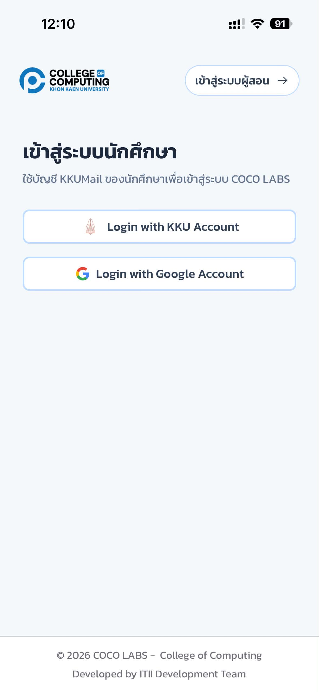
คู่มือฉบับก่อนหน้าระบุว่าให้แตะ "เข้าสู่ระบบด้วย Google" แล้วเลือกบัญชี KKU Mail ปัจจุบันไม่ใช่แล้ว KKU SSO เป็นปุ่มหลักของนักศึกษาบนโดเมนหลัก ส่วนปุ่ม Google เหลือเป็นทางเลือกสำรองชั่วคราวเท่านั้น (ดูรายละเอียดถัดไป)
ระหว่างที่สำนักเทคโนโลยีดิจิทัลของมหาวิทยาลัยยังปรับปรุงข้อมูลบัญชีให้ครบทุกคน บางบัญชีอาจยังเข้าสู่ระบบผ่าน KKU SSO ไม่ได้ ระบบจึงเปิดปุ่ม Google ไว้เป็นทางสำรองชั่วคราวบนโดเมนหลักด้วย (สถานการณ์เดียวกับที่อธิบายไว้ในบทที่ 2 หัวข้อ 2.1.1)

หากเข้าถึงโดเมนหลักของมหาวิทยาลัยไม่ได้เลย ระบบมีโดเมนสำรอง cocolab.osp101.com ให้ใช้แทน โดเมนสำรองนี้ใช้ Google เป็นช่องทางหลัก ไม่ใช่ KKU SSO เนื่องจาก Redirect URL ของ KKU SSO ที่ลงทะเบียนไว้ผูกกับโดเมนหลักเท่านั้น
หากยังไม่เข้าสู่ระบบ จะไม่สามารถใช้งานส่วนใดของฝั่งนักศึกษาได้เลย รวมถึงการเช็กชื่อและการจองคิว กรุณาเข้าสู่ระบบด้วยบัญชี KKU Mail ของตนเองเท่านั้น
19.2 หน้าหลักของนักศึกษา#
เป้าหมายของขั้นตอนนี้ ใช้หน้าหลักเป็นทางลัดไปยังส่วนที่ใช้บ่อยที่สุด
- ดู การ์ดประจำตัว แสดงชื่อ รหัสนักศึกษา จำนวนรายวิชา และสภาพอากาศประจำพื้นที่ พร้อมไอคอนกระดิ่งสำหรับเปิดการแจ้งเตือน
- แตะการ์ด สแกน QR ทันที เพื่อเปิดกล้องสแกนได้ทันที (ทางลัดหลักของการเช็กชื่อและการจองคิว)
- แตะการ์ด รายวิชา เพื่อไปหน้ารายวิชาของฉัน หรือการ์ด แจ้งเตือน เพื่อเปิดหน้ารวมการแจ้งเตือน

- แถบเมนูล่าง
- หน้าหลัก รายวิชา ปุ่ม สแกน ตรงกลาง แจ้งเตือน และบัญชี ใช้สลับหน้าหลักทั้งห้าของแอปตลอดเวลา
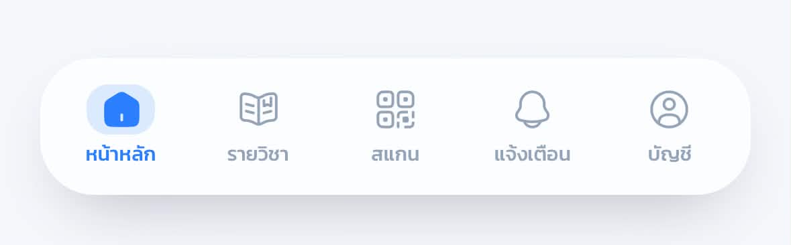
19.3 รายวิชาของฉันและหน้ารายวิชา#
เป้าหมายของขั้นตอนนี้ เข้าดูรายวิชาที่ลงทะเบียนและภาพรวมของแต่ละวิชา
- แตะเมนู รายวิชา ที่แถบล่าง ส่วนหัว รายวิชาของฉัน สรุปจำนวนวิชาที่ลงทะเบียนในระบบ
- การ์ดรายวิชาแสดงรหัสวิชา ชื่อวิชา ผู้สอน ภาคการศึกษา และหมู่เรียน (Section) แตะการ์ดเพื่อเข้าสู่หน้ารายวิชา
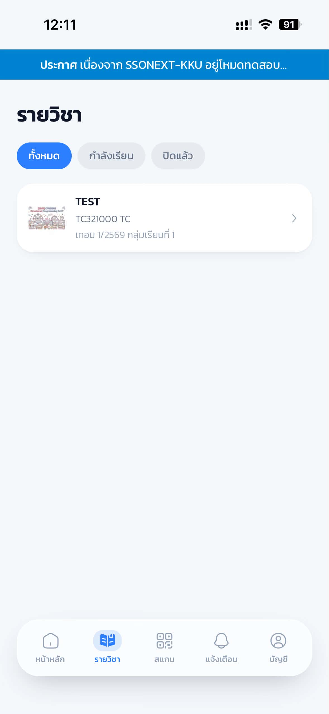
- ภายในหน้ารายวิชา สลับดูข้อมูลผ่านแถบแท็บ ภาพรวม / คะแนน / เช็กชื่อ / อัปเดต
- แท็บ ภาพรวม แสดง กลุ่มของฉัน ทั้งกลุ่มโปรเจกต์และกลุ่มรายสัปดาห์ พร้อมสรุปการเข้าเรียน (มา/สาย/ลา/ขาด) และสรุปคะแนนงานของแต่ละประเภทงาน
- แตะหัวข้องาน (Lab) รายการใดรายการหนึ่งเพื่อดูรายละเอียดของงานนั้นเพิ่มเติม
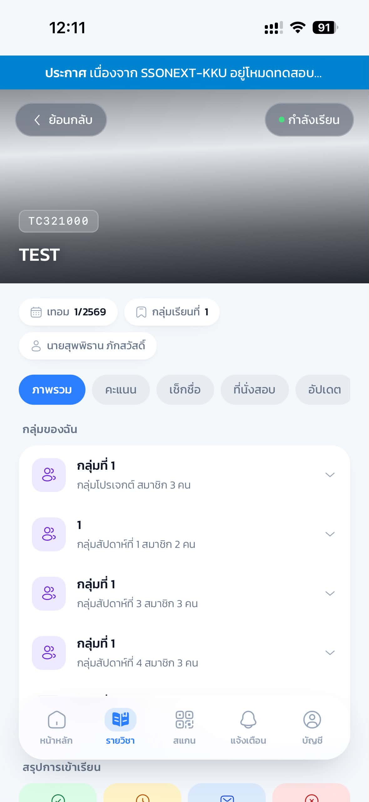
19.4 การเช็กชื่อเข้าเรียน#
เป้าหมายของขั้นตอนนี้ ยืนยันการเข้าเรียนผ่านการสแกน QR หรือกรอก PIN ให้ทันเวลา
- เมื่ออาจารย์เปิดรอบเช็กชื่อและฉาย PIN/QR ขึ้นจอหน้าห้อง ให้แตะปุ่ม สแกน ตรงกลางแถบเมนูล่าง กล้องจะเปิดขึ้นสำหรับสแกน QR Code บนจอ เมื่อสแกนติดระบบจะพาเข้าหน้าเช็กชื่อของรอบนั้นทันที
- หากเปิดกล้องไม่ได้ ให้ใช้ส่วน กรอก PIN หรือวางลิงก์ ด้านล่างแทน กรอก รหัส PIN 6 หลัก ที่แสดงบนจอ (PIN เปลี่ยนทุก 1 นาที ให้ใช้รหัสล่าสุดเสมอ) แล้วแตะปุ่มลูกศรเพื่อยืนยัน
- หากรอบนั้นเปิดการตรวจตำแหน่ง ระบบจะขอสิทธิ์ ตำแหน่ง (GPS) เพื่อตรวจว่าอยู่ในรัศมีห้องเรียน กรุณาแตะอนุญาต
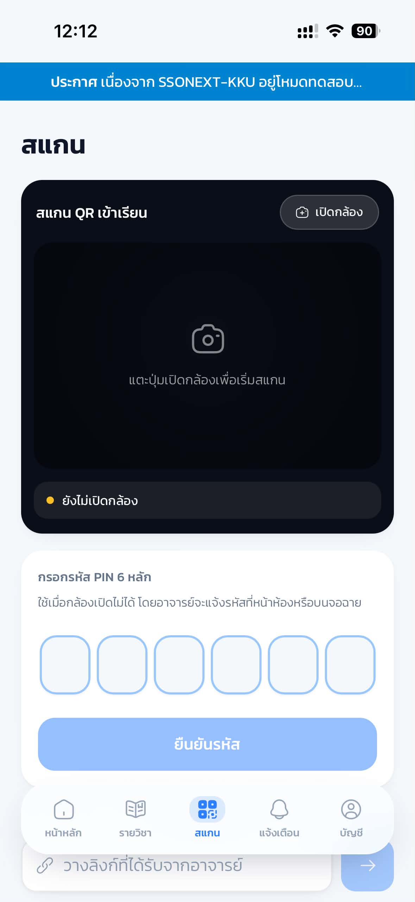

เมื่อเช็กชื่อสำเร็จ ชื่อจะปรากฏบนจอหน้าห้องทันที สถานะ มา/สาย ขึ้นอยู่กับเวลาตัดสายที่อาจารย์ตั้งไว้ ตรวจสอบประวัติย้อนหลังทั้งหมดได้ที่แท็บ เช็กชื่อ ในหน้ารายวิชา ซึ่งสรุปจำนวนมา/สาย/ลา/ขาดทั้งเทอมไว้ให้
การเช็กชื่อหลังเวลาตัดสายจะถูกบันทึกเป็น "สาย" โดยอัตโนมัติ และหากไม่เช็กชื่อภายในรอบจะถูกนับเป็น "ขาด" กรณีลาป่วยหรือมีเหตุจำเป็น กรุณาแจ้งอาจารย์เพื่อขอปรับสถานะย้อนหลัง
19.5 การจองคิวตรวจงานและขอความช่วยเหลือ#
เป้าหมายของขั้นตอนนี้ จองคิวส่งตรวจงานหรือขอความช่วยเหลือจากอาจารย์/ผู้ช่วยสอนในห้องปฏิบัติการ
- เมื่ออาจารย์หรือผู้ช่วยสอนเปิดรอบคิว แตะปุ่ม สแกน แล้วสแกน QR Code ของรอบคิว (บนจอหน้าห้องหรือ QR ประจำโต๊ะ) หรือกรอก PIN ของรอบที่ช่องกรอกด้านล่าง
- ยืนยัน รหัสนักศึกษา และ เลขโต๊ะที่นั่ง (การสแกน QR ประจำโต๊ะจะระบุโต๊ะให้อัตโนมัติ)
- เลือกประเภทการจองเป็น ตรวจงาน (Grading) พร้อมหัวข้องานที่ต้องการส่งตรวจ หรือ ขอความช่วยเหลือ (Help) เมื่อติดปัญหา แล้วแตะ จองคิว
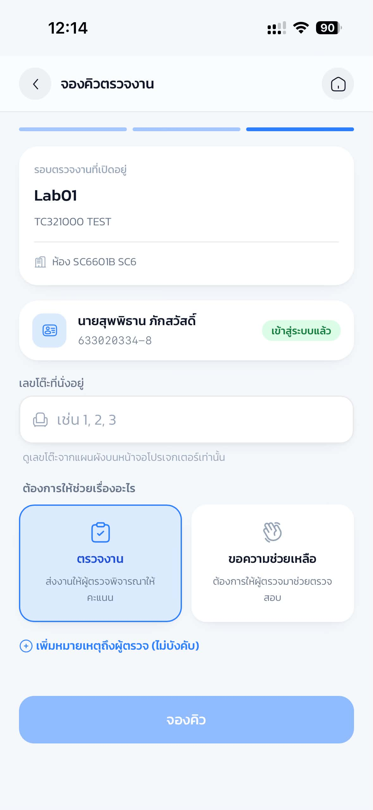
หลังจองคิวแล้ว ติดตามสถานะได้จากโทรศัพท์และจอโปรเจกเตอร์หน้าห้อง
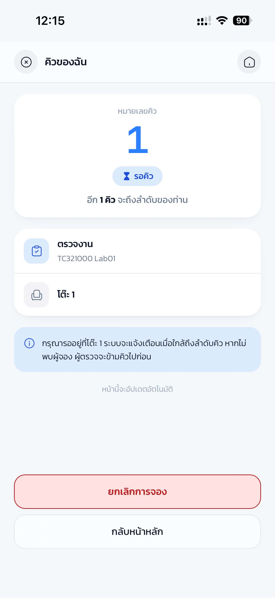
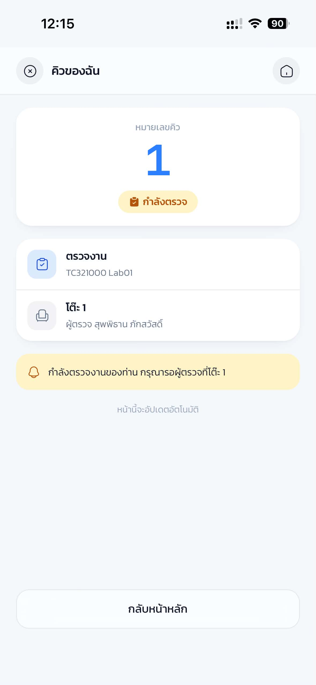
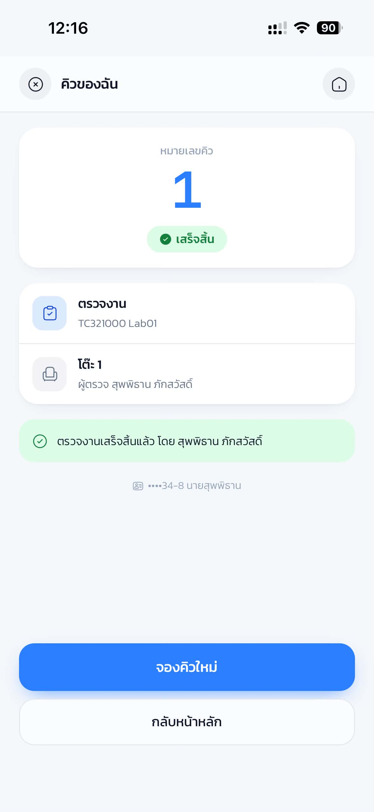
- แตะ ยกเลิกคิว ได้หากยังไม่ถูกเรียกและไม่ต้องการรอแล้ว
- เมื่อผู้ตรวจตรวจเสร็จและลงคะแนน ระบบจะ แจ้งเตือนผลทันที
หากรอบคิวถูกตั้งค่าเชื่อมกับการเช็กชื่อ นักศึกษาที่ไม่ได้เช็กชื่อเข้าเรียนในคาบนั้นจะไม่สามารถจองคิวได้ กรุณาเช็กชื่อให้เรียบร้อยก่อนจองคิว
19.6 การดูคะแนนของตนเอง#
เป้าหมายของขั้นตอนนี้ ตรวจสอบคะแนนสะสมและคะแนนรายข้อของแต่ละงาน
- ที่หน้ารายวิชา เลือกแท็บ คะแนน
- ดู คะแนนรวม (งาน) แสดงคะแนนสะสมเทียบคะแนนเต็มพร้อมแถบความคืบหน้า และ เลือกหมวดคะแนน เพื่อกรองตามประเภทงาน (ทั้งหมด / คะแนนแลป / งานกลุ่ม / งานกลุ่มสัปดาห์ ฯลฯ)
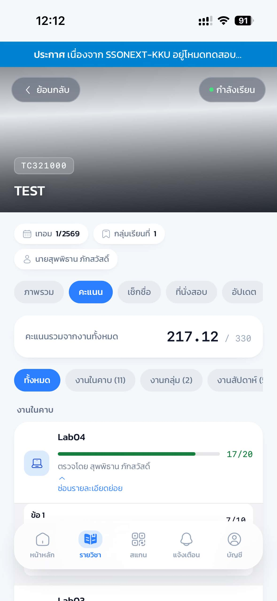
- แตะการ์ดงานเพื่อดู คะแนนที่ได้/คะแนนเต็ม ประเภทงาน และผู้ตรวจพร้อมเวลา
- แตะ ดูรายละเอียดย่อย เพื่อดูคะแนนรายข้อ (เช่น ข้อ 1, ข้อ 2) ป้าย ตรวจแล้ว ยืนยันสถานะการตรวจของงานนั้น
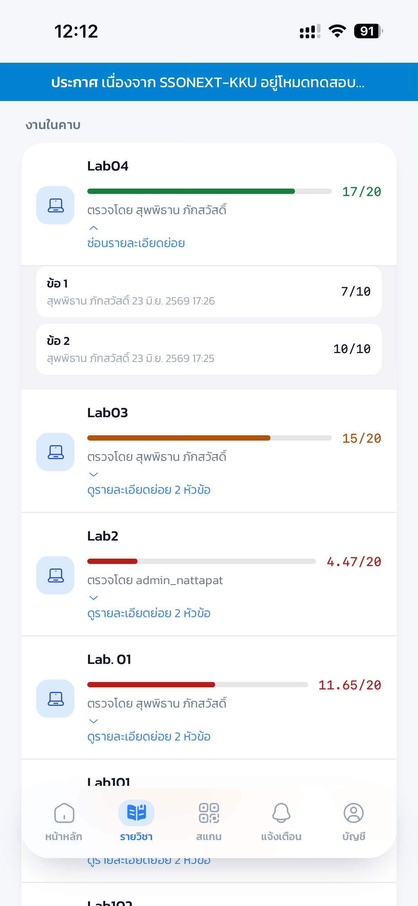
19.7 กลุ่มของฉันและประกาศจากรายวิชา#
เป้าหมายของขั้นตอนนี้ ดูกลุ่มที่ตนสังกัดและประกาศล่าสุดของรายวิชา
- ที่หน้ารายวิชา เลือกแท็บ อัปเดต
- ดู กลุ่มของฉัน ทั้งกลุ่มโปรเจกต์และกลุ่มรายสัปดาห์ที่สังกัด พร้อมรายชื่อสมาชิก แตะรายการ กลุ่มสัปดาห์ เพื่อขยายดูสมาชิกแต่ละสัปดาห์
- ดู ประกาศจากรายวิชา ที่อาจารย์ส่งถึงผู้เรียนในวิชานั้น
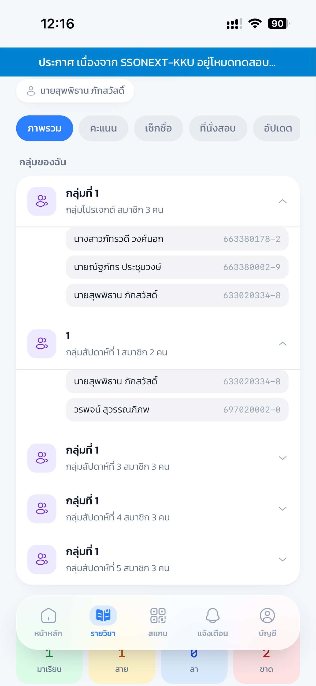
19.8 การแจ้งเตือน#
เป้าหมายของขั้นตอนนี้ ติดตามผลคะแนน การเช็กชื่อ คิว และประกาศจากระบบในที่เดียว
- แตะเมนู แจ้งเตือน ที่แถบล่าง ใช้แถบตัวกรอง ทั้งหมด / ยังไม่อ่าน / อ่านแล้ว เพื่อเลือกดูเฉพาะกลุ่มที่ต้องการ
- แตะปุ่ม อ่านทั้งหมด เพื่อทำเครื่องหมายว่าอ่านทุกรายการ หรือ ล้างที่อ่านแล้ว เพื่อลบรายการที่อ่านแล้วออกจากกล่อง
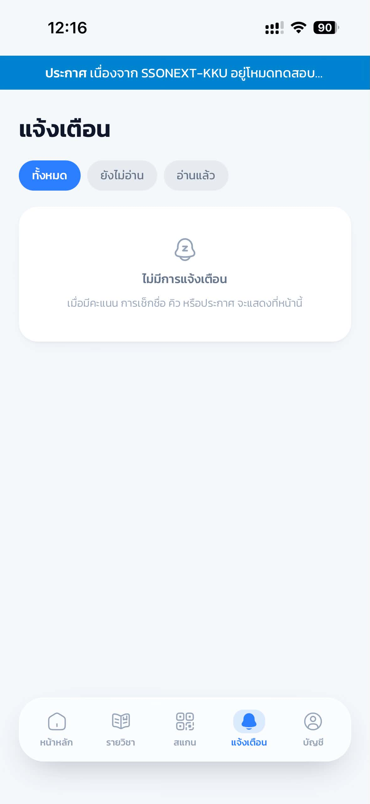
ระบบยังรองรับ Push Notification ที่แจ้งเตือนถึงอุปกรณ์แม้ไม่ได้เปิดหน้าเว็บอยู่ โดยจะขออนุญาตในบางจังหวะของการใช้งาน เช่น เมื่อเปิดหน้าแจ้งเตือนครั้งแรก แนะนำให้แตะอนุญาตเพื่อไม่พลาดผลคะแนนหรือคิวที่ถูกเรียก
ภาพชั่วคราว รอถ่ายจริง (ยืมภาพหน้ารวมการแจ้งเตือนมาประกอบ)
เมื่อมีการแจ้งเตือนใหม่ ไอคอน แจ้งเตือน ที่แถบล่างจะแสดงสัญลักษณ์กำกับให้สังเกตเห็นได้ทันที
19.9 บัญชีผู้ใช้ สิทธิ์เครื่อง และการออกจากระบบ#
เป้าหมายของขั้นตอนนี้ ตรวจสอบข้อมูลบัญชี สิทธิ์เครื่องที่จำเป็น และออกจากระบบอย่างปลอดภัย
- แตะเมนู บัญชี ที่แถบล่าง ดู การ์ดประจำตัว (ชื่อ สาขา เครื่องหมายยืนยันการเชื่อมบัญชี) และข้อมูลบัญชี อีเมล KKU Mail รหัสนักศึกษา (พร้อมปุ่มคัดลอก) และสาขา
- แตะเมนู สิทธิ์เครื่อง เพื่อตรวจสอบว่าอนุญาตสิทธิ์ที่ระบบต้องใช้ครบถ้วนหรือยัง ได้แก่ กล้อง (สแกน QR) ตำแหน่ง (ตรวจรัศมีห้องเรียน) และการแจ้งเตือน
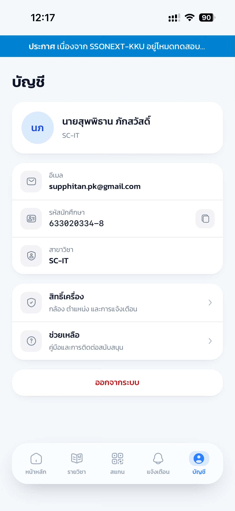
ภาพชั่วคราว รอถ่ายจริง (ยืมภาพหน้าบัญชีมาประกอบ)
หน้าตรวจสอบสิทธิ์เครื่องสรุปสถานะรายการทีละข้อ เช่น พร้อมแล้ว 1/3 สิทธิ์ เมื่ออนุญาตแล้วเบราว์เซอร์จะจดจำสิทธิ์ของเว็บไซต์ไว้ให้ใช้ครั้งต่อไป
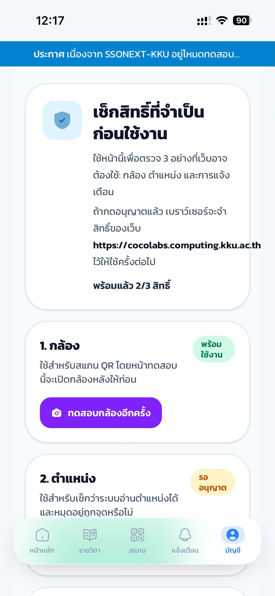
ขั้นตอนตรวจสิทธิ์ตำแหน่งจะทดสอบอ่านพิกัดจริงของเครื่อง เพื่อยืนยันว่าใช้เช็กชื่อแบบตรวจตำแหน่งได้ เมื่ออนุญาตและอ่านตำแหน่งสำเร็จ ป้ายสถานะจะเปลี่ยนเป็น พร้อมใช้งาน พร้อมพิกัดและค่าความแม่นยำ (เช่น ประมาณ ±7 เมตร)
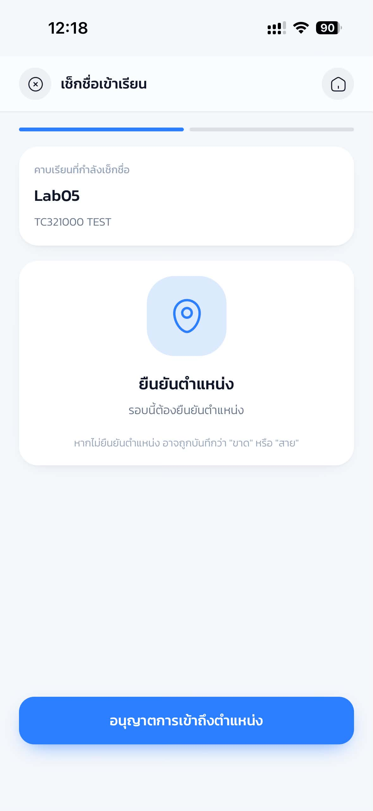
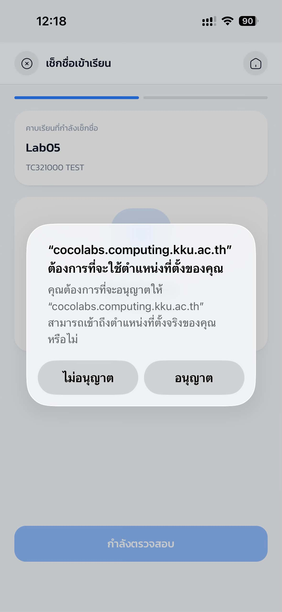
หากไม่อนุญาตสิทธิ์กล้อง ยังใช้วิธีกรอก PIN แทนการสแกนได้ แต่หากรอบเช็กชื่อเปิดการตรวจตำแหน่งไว้ จำเป็นต้องอนุญาตสิทธิ์ตำแหน่ง มิฉะนั้นจะเช็กชื่อไม่ผ่าน หากพบว่าข้อมูลรหัสนักศึกษาหรือสาขาไม่ถูกต้อง กรุณาติดต่ออาจารย์ผู้สอนหรือผู้ดูแลระบบเพื่อแก้ไขข้อมูลการจับคู่บัญชี ไม่ควรใช้บัญชีของผู้อื่นเข้าสู่ระบบแทนกัน
- แตะเมนู ช่วยเหลือ ที่หน้าบัญชี เพื่อเปิดคู่มือการใช้งานและช่องทางติดต่อฝ่ายสนับสนุน
- แตะปุ่ม ออกจากระบบ เมื่อเลิกใช้งาน โดยเฉพาะเมื่อเข้าสู่ระบบบนเครื่องที่ใช้ร่วมกับผู้อื่น